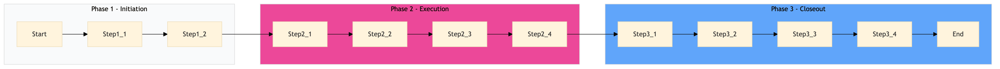

| Role | Steps |
|---|---|
| Executive Housekeeper | 1.1 3.2 3.3 |
| Housekeeping Supervisor | 1.2 3.1 |
| Housekeeping Staff | 2.1 2.2 2.3 2.4 3.4 |
| Step | Name | Role | System | Input | Output | KPI | Dec? | Exc? | Pain Point / Risk |
|---|---|---|---|---|---|---|---|---|---|
| 1.1 | Initiate Cleaning Schedule | Executive Housekeeper | Oracle OPERA Cloud | Cleaning schedule template | Updated cleaning schedule for pool and fitness area | Less than 5 minutes to update the schedule | N | N | Manual updates leading to errors in scheduling |
| 1.2 | Assign Cleaning Tasks | Housekeeping Supervisor | Oracle OPERA Cloud | Updated cleaning schedule | Task assignments for housekeeping staff | Less than 3 minutes to assign tasks | N | N | Overlooking specific areas during task assignment |
| 2.1 | Prepare Cleaning Supplies | Housekeeping Staff | Birchstreet Procurement | Cleaning supply inventory list | Supplies ready for use | Less than 10 minutes to prepare supplies | N | Y | Stockouts of essential cleaning products |
| 2.2 | Clean Pool Area | Housekeeping Staff | Oracle OPERA Cloud | Cleaning checklist for pool area | Cleaned and sanitized pool area | Less than 30 minutes to clean the pool area | N | Y | Difficulty in reaching high or hard-to-clean areas |
| 2.3 | Clean Fitness Area | Housekeeping Staff | Oracle OPERA Cloud | Cleaning checklist for fitness area | Cleaned and sanitized fitness area | Less than 45 minutes to clean the fitness area | N | Y | Equipment left uncleaned or malfunctioning |
| 2.4 | Inspect and Maintain Equipment | Housekeeping Staff | Oracle OPERA Cloud | Equipment maintenance checklist | All equipment inspected and functioning properly | Less than 15 minutes to inspect and maintain equipment | N | Y | Neglecting routine maintenance leading to breakdowns |
| 3.1 | Report Cleaning Status | Housekeeping Supervisor | Oracle OPERA Cloud | Cleaning status report template | Daily cleaning status report | Less than 5 minutes to complete the report | N | N | Incomplete or inaccurate reporting |
| 3.2 | Review and Adjust Schedule | Executive Housekeeper | Oracle OPERA Cloud | Daily cleaning status report | Adjusted cleaning schedule if necessary | Less than 10 minutes to review and adjust the schedule | Y | N | Inflexible scheduling leading to overburdened staff |
| 3.3 | Communicate with Spa Manager | Executive Housekeeper | Oracle OPERA Cloud | Communication template | Notification of cleaning status to Spa Manager | Less than 2 minutes to communicate | N | N | Lack of communication between departments |
| 3.4 | Log Cleaning Activities | Housekeeping Staff | Oracle OPERA Cloud | Cleaning activity log template | Updated cleaning activity log | Less than 5 minutes to log activities | N | N | Manual logging leading to data entry errors |
The process ensures that the pool and fitness area at a Marriott full-service hotel are thoroughly cleaned and maintained to meet health and safety standards.